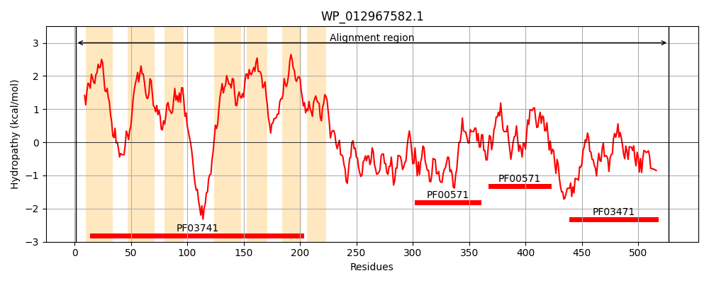
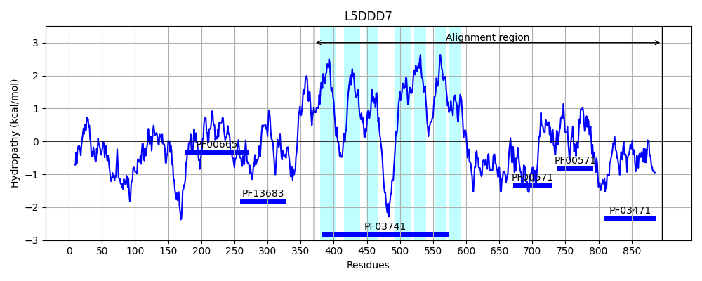
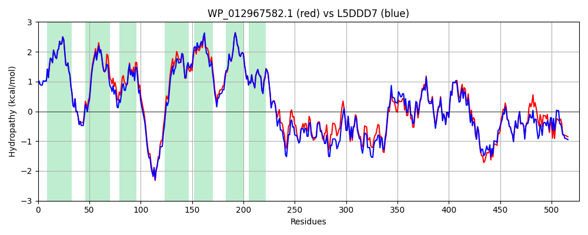

Hit Accession: L5DDD7
Hit TCID: 2.A.109.2.3
Hit Description: gnl|BL_ORD_ID|6164 gnl|TC-DB|L5DDD7|2.A.109.2.3 Membrane protein OS=Escherichia coli KTE166 GN=WKI_02229 PE=4 SV=1
Mach Len: 527
e:0.000000
Query TMS Count : 7
Hit TMS Count: 7
TMS-Overlap Score: 7.400000
Predicted Substrates:None
BLAST Alignment:
Score: 2258 , Bit scores: 874 bits, E-value: 0.0e+00, Alignment length: 527, Percentage identity: 84
Query: 1 MEWIADPSIWAGLVTLVVIELVLGIDNLVFIAILAEKLPPAQRDRARITGLLLAMVMRLLLLASISWLVTLTKPLIVFHDFSFSARDLIMLFGGLFLLFKATVELNERLEGKDSDNPTQRRGAKFWAVVAQIVVLDAIFSLDSVITAVGMVDHLAVMMAAVIIAISLMLMASKALTRFVNSHPTIVILCLSFLLMIGFSLIAEGFSFIIPKGYLYAAIGFSVMIEALNQLALFNRRRFLSANMTLRQRTTEAVMNLLSGQKEKAELDADTASLVADQDHHPLFNPQERLMIERVLNLNQRSVSSIMTSRHDIERINLSAPEEEIRSLVEKNQHTRLVVTGGKDNEDLLGVVHVIDLLQQSLRQEPLDLQVLVRQPLVFPEGLPLLSALEQFRQARTHFAFVVDEFGSVEGIVTLSDVMETIAGNLPNEVEEIDARHDIQHHQDGSWTVNGHMPLEDLVQYVPLPLDDKREYHTVAGLLMEYLQHVPQVGETIEIDGYTLRTLQVDSHRVQKVQIVPPVKQDELDYEV 527
MEWIADPSIWAGLVTLVVIELVLGIDNLVFIAILAEKLPPAQRDRARITGL+LAMVMRLLLLASISWLVTLT+PL F F+FSARDLIMLFGG FLLFKAT+ELNERLEGKDS+NPTQR+GAKFW VV QIVVLDAIFSLDSVITA+GMVDHL VMMAAV+IAISLMLMASK LT+FVNSHPTIVILCLSFLLMIGFSL+AEGF F+IPKGYLYAAIGFSVMIEA NQLA+FNRRRFLSAN TLRQRTTEAVM LLSGQKE AELD +TAS++ D + +FNPQER MIERVLNLNQR+VSSIMTSRHDIE I+L+APE+EIR L+E+NQHTRLVVT G D EDLLGVVHVIDLLQQSLR EPL+L+VL+RQPLVFPE LPLL ALEQFR ARTHFAFVVDEFGSVEGIVTLSDV ETIAGNLPNEVEEIDARHDIQ + DGSWT NGHMPLEDLVQYVPLPLD+KREYHT+AGLLMEYLQ +P+ GE +++ Y L+TLQV+SHRVQKVQI+P K E++YEV
Sbjct: 370 MEWIADPSIWAGLVTLVVIELVLGIDNLVFIAILAEKLPPAQRDRARITGLMLAMVMRLLLLASISWLVTLTQPLFSFRSFTFSARDLIMLFGGFFLLFKATMELNERLEGKDSNNPTQRKGAKFWGVVTQIVVLDAIFSLDSVITAIGMVDHLLVMMAAVVIAISLMLMASKPLTQFVNSHPTIVILCLSFLLMIGFSLVAEGFGFVIPKGYLYAAIGFSVMIEAFNQLAIFNRRRFLSANQTLRQRTTEAVMRLLSGQKEDAELDTETASMLVDHGNQQIFNPQERRMIERVLNLNQRTVSSIMTSRHDIEHIDLNAPEDEIRQLLERNQHTRLVVTDGDDAEDLLGVVHVIDLLQQSLRGEPLNLRVLIRQPLVFPETLPLLPALEQFRNARTHFAFVVDEFGSVEGIVTLSDVTETIAGNLPNEVEEIDARHDIQKNADGSWTANGHMPLEDLVQYVPLPLDEKREYHTIAGLLMEYLQRIPKPGEEVQVGDYLLKTLQVESHRVQKVQIIPLRKDGEMEYEV 896 | Protein Hydropathy Plots: |
|---|
|  |  |
Pairwise Alignment-Hydropathy Plot:
|
|---|
|  |